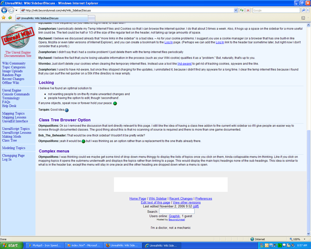

Wiki Sidebar/Discuss
Internet Explorer 7
Graphik: IE7, now out in the wild, has proper support for position:fixed.
/me gives Bill a cookie.
Tarquin: /me smacks Bill for taking so damn long. I'm not about to get IE7, so someone will have to tell me what to change so IE7 users get the fixed sidebar.
Graphik: Change nothing. It's working beautifully.

IE7 workin' that sidebar like a pro. |
Internet Explorer
IE 6.0 can't render the sidebar correctly. This is unavoidable. IE doesn't correctly draw position:fixed elements if their specified size is smaller then their content. It usable in IE 6 – not pretty.
GRAF!K: Because of this, could a separate CSS option be available on Preferences depending on what browser you're using?:
- (Radio buttons)
- Internet Explorer
- Mozilla
- You get the Idea
Mychaeel: But it's only Internet Explorer among all of the contemporary browsers which has this problem. I could understand if tarquin is not inclined to go great lengths to accommodate a buggy browser – as you point out there are lots of alternatives.
ZxAnPhOrIaN: Im using IE 6 and i don't have that sidebar problem!  Is the problem this? The sidebar appear as a footer.
Is the problem this? The sidebar appear as a footer.
Tarquin: That's because there is a small IE hack. Try this site in Opera or Mozilla. The sidebar is really cool with those 
Abe: I cannot change the sidebar preferences in the 'offline wiki'. The link in preferences points to the online version which affects only the only version, not the offline version. Any way to fix this?
GRAF!K: Please add a comment at the bottom of a page. At it's old position, it looked like
GRAF!K: Because of this, could a separate CSS option be available...[and everything below]
was an answer to your question.
In answer to your question, there is no reasonable way to change CSS offline. I don't think there will be that addition, either. It isn't a very high priority sort of thing, and the admins have other projects.
P.S. – I say "reasonable way" because you could replace the LINK REF tags in the HTML source to whatever CSS file you wanted. But that sounds awfully silly, doesn't it?
Mychaeel: If there's a way the global styles can be changed (within the limits of the CSS standards) to make the sidebar display well even in broken Internet Explorer, I'll be happy to apply that change. Otherwise I'm with tarquin who simply doesn't believe in catering for known browser bugs (in Internet Explorer or anywhere else) at the expense of other browsers.
If there's anything in the style sheets you'd like to fix for yourself in your copy of the Offline Wiki, you can edit the .css files in the "shared" subdirectory created when extracting the Offline Wiki files.
Tarquin: You can ALWAYS force your own CSS rules on any site you visit.
GRAF!K: Does anyone use %random%, or is it just taking up space?
Wormbo: I use it sometimes when I'm bored to find pages that need editing.
Zxanphorian: Why not put the Log In link on top of or to the side of the search field in the header, like wikipedia?
Mychaeel: How frequently do you need to log in here, to start with?
Zxanphorian: I periodically delete my Temp Internet Files and Cookies so that i can browse the internet quicker. I do that about 3 times a week. Also, it hogs up a space on the sidebar for a more useful link could be. The text could be half or 1/3 of the size of the regular text on the header, not taking up large amounts of space.
Mychaeel: I believe we discussed already that "more links in the sidebar" is a bad idea. – As for your cookie problems: I suggest you use a cookie manager (or a browser that has one built-in like Opera, Mozilla or even later versions of Internet Explorer), and you can create a bookmark to the Log In page. (Perhaps we can add the Log In link to the header bar sometime later, but right now I don't consider that a priority.)
Zxanphorian: I didn't say that i had a cookie problem! I just delete them with the temp internet files periodically
Mychaeel: I believe the fact that you're losing valuable information in the process (such as your Wiki cookie) qualifies it as a "problem." But, naturally, that's up to you.
Wormbo: Just don't delete your cookies when clearing the temporary internet files. Instead use a tool like [Ad-aware] to get rid of tracking cookies, spyware and the like.
Zxanphorian: I used to have Ad-aware, but once they stopped charging for the updates, i uninstalled it, because i didn't find any spyware for a long time. I clear the temp internet files because i found that you can surf the net quicker on a 56k if the directory is near empty.
Locking
I believe I've found an optimal solution to
- not wanting people to on-the-fly make unwanted changes and
- people having the option to edit, though 'secondhand'.
If anyone objects, speak now or forever hold your peace. 
Tarquin: Good idea
Class Tree Browser Option
OlympusMons: Ok so I removed the discussion that isnt directly relevant to this page. I still like the idea of having a class tree addon to the current wiki sidebar so it'll give people an easier way to browse through documented classes. The good thing about this is that no scanning of source is required and there is more than one game documented.
Bob_The_Beheader: That would be one thick sidebar! Wouldn't it be pretty wide?
OlympusMons: yeah it would be but I was thinking as an option rather than a replacement to the one thats already there.
Complex menus
OlympusMons: I was thinking could we maybe get some kind of drop down menu thinggy to display the lists of topics once you click on them, kinda collapsable menu Im thinking. Like if you click on mapping topics it opens the submenu underneath and displays the topics rather than linking to a page. This would display the main topic headings none of the sub headings. This idea is similar to what is in the header bar, except the menu will stay in one piece and the other heading are dropped down when a menu is open.